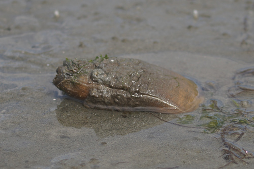
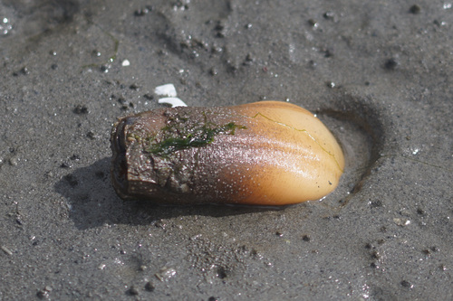
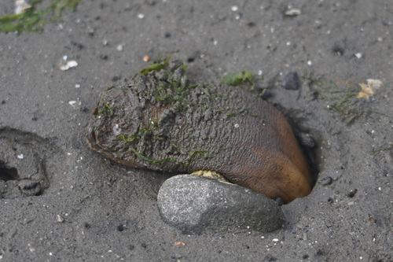
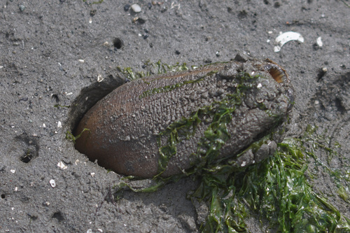
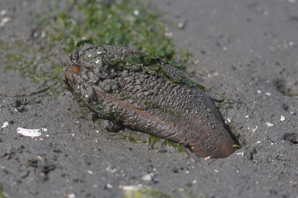
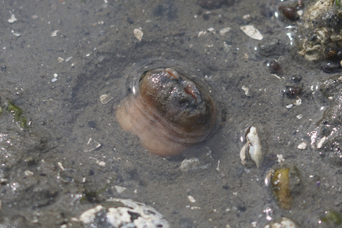
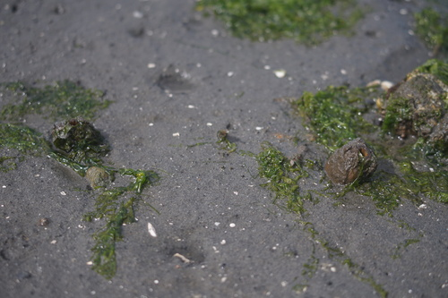

Low tide at the beach is my favorite! I love walking around playing with all the beach animals~ There's tiny crabbies, squirting clams, sand dollars, and... these things?!
Now why, why would these things exist! Who thought these guys up!?
These are geoducks! They're a burrowing clam that lives in the sand and have a long siphon that extends to the surface. You can find them at low tide in my location easily.
The first time I saw a geoduck was at Seattle Uwajimaya. They keep live ones in tanks, so you get to see the whole shebang at once.
My favorite geoduck activity is lightly poking them. They squirt water at you through one or both of their siphons and then pull their neck back into the sand.
I was very tempted to dig one up and then let it go back into the water, but I found out they can't redig! I don't want to hurt them, so I won't dig one up.
I've never tasted one, but this beach has a sign that warns of eating any sea life from this beach is a very bad idea due to pollution. Even if I had a fishing license, this is not a good place to find dinner.
Here are two mostly hidden in the sand. Best friends probably.
Please learn more about our hideous friends, the geoducks, by checking out these links: